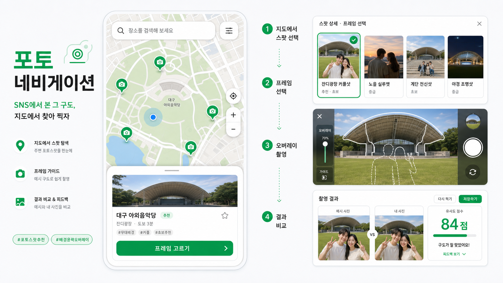

예쁜 장소에 가도 어디에서 어떤 방향으로 찍어야 원하는 사진이 나오는지 알기 어렵습니다. SNS 사진은 결과만 보여주고 촬영 지점과 구도는 알려주지 않습니다.
MVP PRODUCT REQUIREMENTS DOCUMENT
포토 내비게이션
MVP PRD + 실행 요약
사용자가 원하는 사진을 찍을 수 있도록 장소, 촬영 지점, 프레임, 배경 가이드, 촬영 결과 비교를 하나의 흐름으로 연결하는 지도 기반 웹앱입니다.
PROJECT OWNERN030 김병조
DOCUMENT STATUSWeek 2 / In Development
TARGET RELEASEWeek 4 Demo
DELIVERABLEWeb App MVP
02
실행 요약
이 문서는 무엇을 만들고, 현재 어디까지 왔으며, 다음에 어떤 결정을 해야 하는지 빠르게 판단하기 위한 MVP 기준 문서입니다.
지도에서 포토스팟과 프레임을 고르고, 예시 사진의 오버레이를 따라 촬영하게 합니다. AI는 사진을 대신 만드는 것이 아니라 촬영 안내를 돕는 역할입니다.
예시 사진을 등록할 때만 Overlay Agent로 가이드를 만들고, 사용자 촬영 때는 저장된 가이드를 재사용합니다.
React 화면, 실제 네이버 지도, 포토스팟 마커, 상세 정보, 프레임 선택, 브라우저 카메라 흐름을 연결했습니다. 다음 핵심 작업은 DB 수직 슬라이스입니다.
03
제품 목표와 검증 기준
핵심 가설
사용자는 사진을 못 찍는 것이 아니라, 어디에서 어떤 구도로 찍어야 하는지 몰라 원하는 결과를 얻지 못한다. 지도 기반 탐색과 간단한 오버레이 가이드가 이 문제를 줄일 수 있다.
대상 사용자
여행·데이트·일상 외출 중 SNS에서 본 구도를 따라 찍고 싶지만, 촬영 지점과 구도를 찾는 데 어려움을 느끼는 모바일 사용자.
첫 촬영 완료 시간지도 진입부터 첫 촬영 결과 확인까지 걸린 시간사용성 테스트 후 목표값 확정
흐름 완료율스팟 선택 → 프레임 → 촬영까지 완료한 비율사용성 테스트 후 목표값 확정
재촬영 의향다른 프레임을 선택해 다시 촬영하려는 의사사용성 테스트 후 목표값 확정
오버레이 도움 인식구도를 맞추는 데 가이드가 도움이 됐다는 응답사용성 테스트 후 목표값 확정
04
MVP 범위와 의사결정
이번 MVP에 포함
- 지도, 현재 위치·거리 표시
- 공식·후보 포토스팟 탐색과 상세 정보
- 프레임 선택, 카메라 오버레이, 촬영 결과 비교
- 후보 제안 UI, 좋아요·관리자 검토 상태
이번 MVP에서 제외
- 실시간 자세 교정과 AR 화살표 안내
- 매 촬영마다 새 레이아웃을 생성하는 Vision 처리
- 자동 후보 승인과 완전한 의미 기반 사진 유사도
- 실제 로그인·소셜 기능의 전체 구현
결정 로그 · 사진-사진 비교보다 가이드-가이드 비교를 우선
원본 사진은 날씨, 조명, 옷, 배경 인물에 따라 크게 달라집니다. 기준 프레임과 촬영 사진에서 인물 위치·크기·수평선·배경선을 추출해 비교하면 사용자가 맞추려는 “구도”에 집중할 수 있습니다. 점수 구현 전에는 예시와 결과를 나란히 보여주는 비교 화면을 기본 결과로 제공합니다.
05
사용자 경험과 요구사항
지도 탐색현재 위치와 공식·후보 스팟을 확인
스팟 선택마커와 목록 선택 상태를 동기화
상세 확인장소, 주소, 촬영 팁, 후보 상태
프레임 선택1인·커플 등 원하는 예시 구도 선택
카메라 실행선택한 프레임의 오버레이로 촬영
결과 비교예시와 촬영 결과를 나란히 확인
구도 일치도후속 단계에서 가이드 비교 점수 제공

기존 UI 시나리오: 지도 탐색 → 프레임 선택 → 오버레이 촬영 → 결과 비교

지도 위에는 서비스 고유의 마커·탭·바텀시트를 얹고, 실제 지도 이동과 선택 상태는 동기화한다.
| 기능 | 사용자 행동 | 완료 조건 | 현재 상태 |
|---|---|---|---|
| 지도·마커 | 공식 또는 후보 스팟을 확인하고 선택 | 선택 마커와 목록 상태가 일치 | 완료 |
| 검색·지도 이동 | 장소명·주소로 검색 결과 선택 | 해당 스팟 선택 및 지도 중심 이동 | 로컬 구현 |
| 현재 위치·거리 | 위치 권한을 허용 | 현재 위치와 스팟까지 거리 표시, 거절 시 안내 | 예정 |
| 프레임·카메라 | 프레임 선택 후 촬영 | 선택 프레임 오버레이와 촬영 결과 확인 | 완료 |
| 후보 참여 | 후보 제안 또는 좋아요 | 제안·좋아요가 DB에 저장되고 검토 상태 표시 | UI/목 데이터 |
| 구도 일치도 | 촬영 후 비교 결과 확인 | 기준 가이드와 촬영 가이드의 비교 결과 제공 | 예정 |
06
프레임 등록과 구도 비교 명세
가이드 생성은 운영 과정에서 수행하고, 사용자 촬영 시에는 저장된 가이드를 사용합니다. 이 분리는 사용자 대기 시간을 줄이고 프레임 품질을 운영자가 검수할 수 있게 합니다.
프레임 등록 단계
- 운영자가 예시 사진을 등록
- Overlay Agent가
guide_json초안 생성 - 사람이 좌표와 윤곽을 검수
- reference 이미지, overlay PNG, guide JSON 저장
→
사용자 촬영 단계
- 저장된 프레임과 오버레이 선택
- 카메라에서 구도를 맞춰 촬영
- 촬영 사진에서 비교용 가이드 추출
- 기준 가이드와 비교하거나 좌우 결과 확인
인물 수
인물 위치·크기
수평선 높이
배경 대표선
사진 비율·방향
07
개발 명세
시스템 구성
React + Vite지도, 화면 상태, 카메라 UI
→
Express API검색 프록시, 검증, 권한 처리
→
SupabasePostgreSQL, Storage, RLS
핵심 데이터 모델
users사용자 프로필과 역할. 로그인·관리자 기능 도입 시 사용.
photo_spots장소명, 좌표, 주소, 상태, 대표 이미지, 후보·공식 구분.
photo_framesspot_id, reference URL, overlay URL, 촬영 팁,
guide_json.proposals후보 제안 위치, 상태, 작성자, 관리자 검토 결과.
proposal_images후보 제안에 연결된 Storage 이미지 URL과 정렬 순서.
likes후보 스팟 또는 프레임에 대한 사용자 좋아요. 중복 방지 유니크 제약 필요.
API 계약 보기
| 상태 | 메서드 | 경로 | 책임 |
|---|---|---|---|
| 기본 구조 | GET | /health | Express API 상태 확인 |
| 기본 구조 | GET | /api/places/search?q= | 서버 환경변수로 네이버 지역 검색을 호출하고 필요한 장소 정보만 반환 |
| 예정 | GET | /api/photo-spots | 공식·후보 포토스팟 목록과 지도 좌표 조회 |
| 예정 | GET | /api/photo-spots/:id | 상세 정보와 연결된 프레임 조회 |
| 예정 | POST | /api/proposals | 인증된 사용자의 후보 제안 생성 |
| 예정 | POST / DELETE | /api/photo-spots/:id/likes | 인증된 사용자 기준 좋아요 생성·취소 |
DB SQL 초안 보기
실제 마이그레이션 전 구조 검토용 초안입니다. 사진 파일 자체는 DB에 넣지 않고 Storage URL을 저장합니다.
photo_spots(id, name, kind, latitude, longitude, address, status, cover_image_url) photo_frames(id, photo_spot_id, people_type, reference_image_url, overlay_url, guide_json, shooting_tip) proposals(id, user_id, latitude, longitude, frame_type, status, reviewed_by) proposal_images(id, proposal_id, storage_path, sort_order) likes(id, user_id, photo_spot_id, created_at) UNIQUE (likes.user_id, likes.photo_spot_id)
08
보안과 배포 원칙
Maps Client ID브라우저 SDK 로드에 필요한 공개 식별자. NCP 콘솔에서
localhost, yf560.github.io 등 허용 도메인으로 제한.Client Secret네이버 지역 검색용 비밀값.
apps/api/.env와 서버 배포 환경에만 저장. Vite와 GitHub Pages에 포함 금지.Supabase 권한브라우저에는 공개 키만 사용하고 RLS를 활성화.
service_role은 Express 서버에서만 사용.배포 분리GitHub Pages는 정적 React 배포. 지역 검색·DB·업로드는 별도 Express 서버 배포 대상으로 관리.
비밀값 배포 원칙
.env는 Git ignore 상태로 유지합니다. GitHub Actions Secret은 빌드·배포 과정에서만 주입하며, Client Secret을 VITE_* 변수나 정적 번들에 넣지 않습니다.
09
실행 계획과 리스크
Week 1 · 기획문제 정의, UI 설계, 클릭형 프로토타입, 백로그·이슈 정리완료
Week 2 · 화면 연결React, 네이버 지도, 스팟·프레임, 카메라, Express 기본 구조진행 중
Week 3 · 수직 슬라이스Supabase 초기 데이터, 조회 API, 목 데이터 교체, 지도 반영다음 목표
Week 4 · 검증후보 참여, 결과 비교, 사용성 테스트, 데모 안정화예정
다음 주 완료 조건
Supabase 초기 포토스팟 데이터 → Express 조회 API → React 지도 마커·상세 갱신
화면 요청부터 서버 처리, DB 저장·조회, 화면 갱신까지 한 번의 수직 슬라이스를 실제 데이터로 완성합니다.
| 리스크 | 영향 | 대응 |
|---|---|---|
| 위치 권한 거절 | 거리·현재 위치 안내를 제공할 수 없음 | 지도 탐색은 유지하고, 위치 기능을 켤 수 있는 안내만 제공 |
| 키 노출 | 외부 API 오용 및 보안 사고 | Secret 서버 분리, 허용 도메인, 배포 전 비밀값 검사 |
| 이미지 업로드 | 저장 비용·부적절한 파일·개인정보 위험 | 형식·크기 검증, UUID 경로, 승인 전 비공개 처리 |
| 구도 점수 품질 | 사용자 기대와 실제 점수의 불일치 | 좌우 비교를 기본 제공하고 점수는 단계적으로 추가 |
| MVP 범위 확대 | 4주 내 핵심 흐름 미완성 | 실시간 AR·자동 승인·고도화 AI는 명시적으로 제외 |
결정이 필요한 항목
장소 검색의 역할네이버 지역 검색은 대표 장소 정보를 보완하고, 촬영 좌표와 프레임은 서비스 DB를 기준으로 관리한다.
구도 점수 초기 기준좌우 비교를 먼저 검증한 뒤, 인물·수평선·배경선의 가중치와 점수 기준을 정한다.
관리자 검토 범위4주 MVP에서는 후보 제안의 AI 자동 승인이 아닌 관리자 검토 상태 흐름만 구현한다.